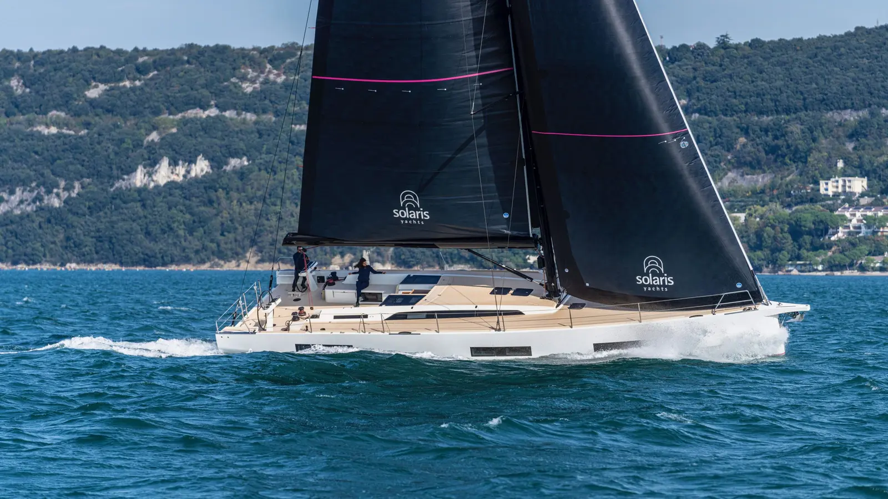
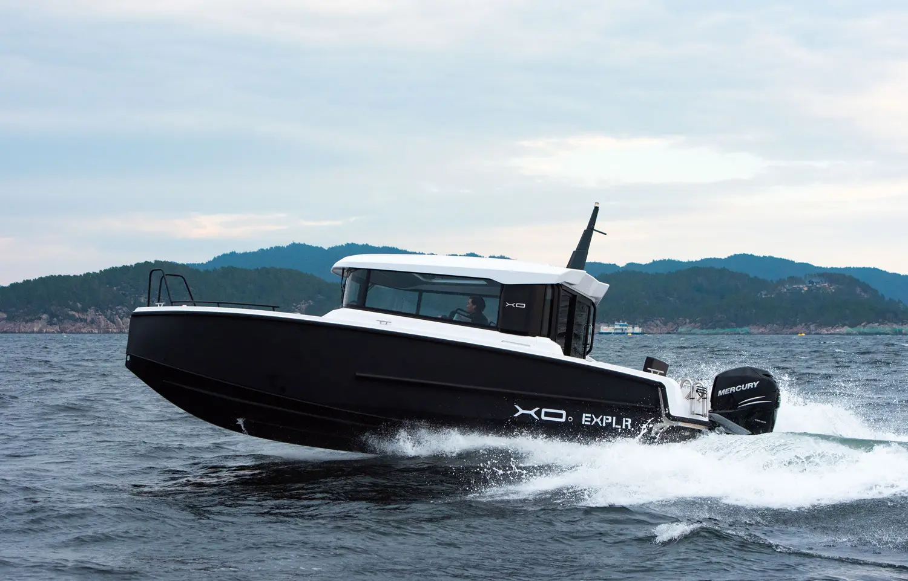
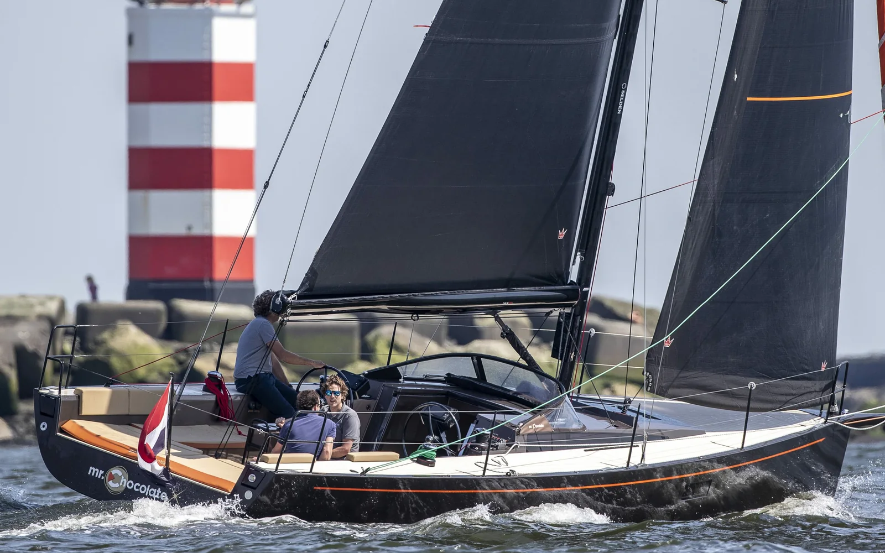
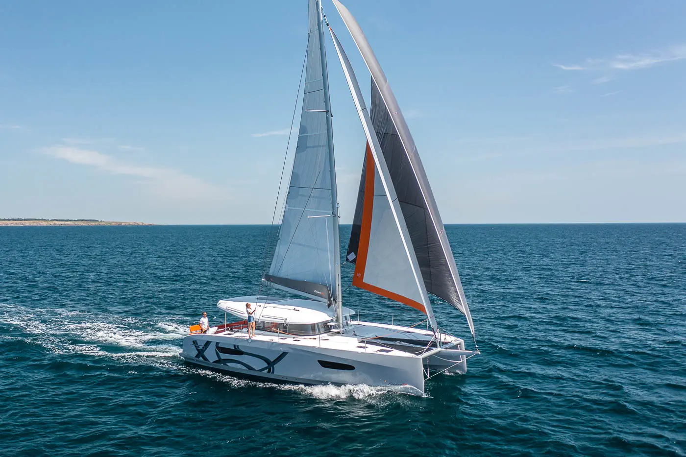

El portafolio
Las mejores marcas
del mundo. Un solo
representante en Chile.
 Axopar
Adventure boatsFinlandia
Axopar
Adventure boatsFinlandia
 Beneteau
Vela y motorFrancia
Beneteau
Vela y motorFrancia
 Lagoon
CatamaranesFrancia
Lagoon
CatamaranesFrancia

Solaris Vela de alto rendimientoItalia Aquila
Catamaranes a motorEE.UU.
Aquila
Catamaranes a motorEE.UU.

XO Boats AluminioFinlandia
Saffier Day sailersPaíses Bajos
Excess Catamaranes a velaFrancia VX One
Vela deportivaEE.UU.
VX One
Vela deportivaEE.UU.
 Switch
Vela deportiva de foilingTailandia
Switch
Vela deportiva de foilingTailandia
 Oceanic PowerNuestra marca
SemirrígidosChile
Oceanic PowerNuestra marca
SemirrígidosChile